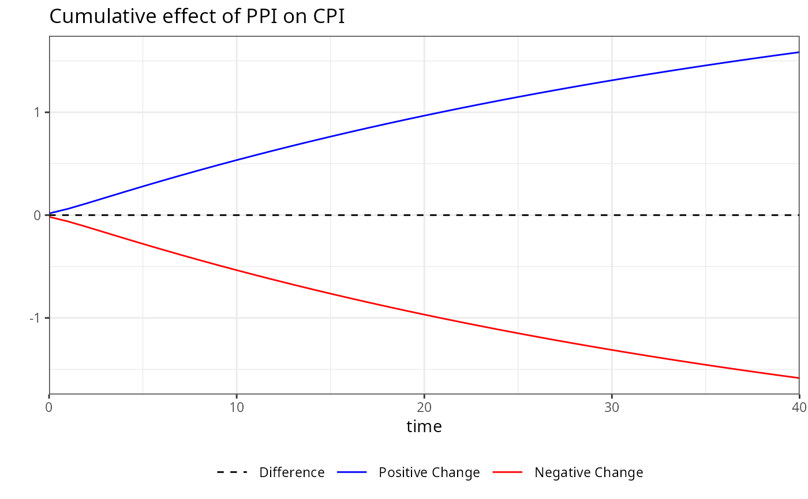
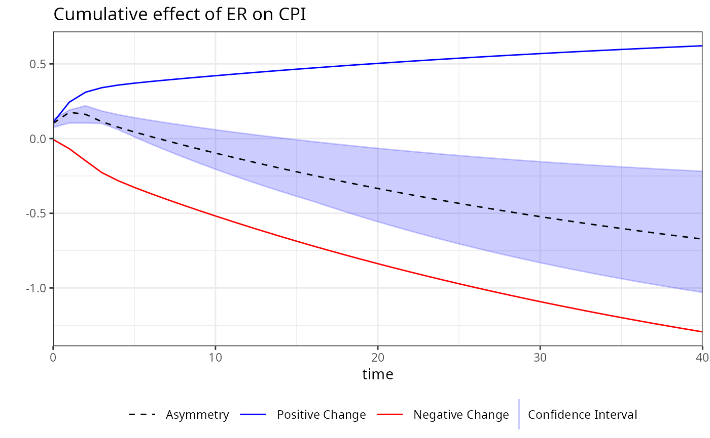
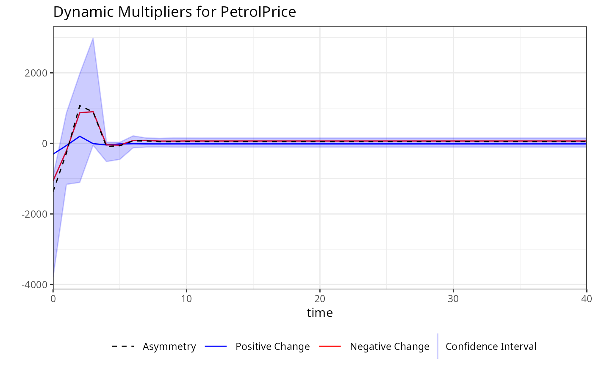
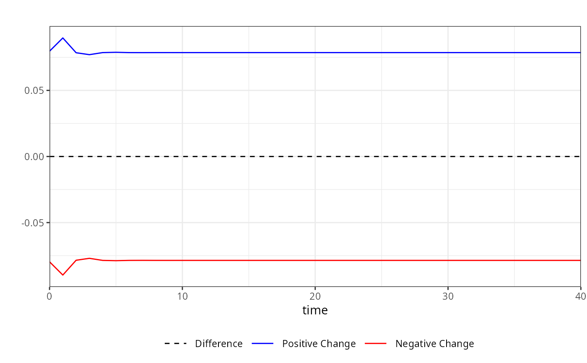

Bootstrap Confidence Intervals for Dynamic Multipliers
bootstrap.RdThis function computes bootstrap confidence intervals (CI) for dynamic multipliers
of a specified variable in a model estimated using the kardl package. The bootstrap method
generates resampled datasets to estimate the variability of the dynamic multipliers,
providing upper and lower bounds for the confidence interval.
Arguments
- kmodel
The model produced by the
kardlfunction. This is the model object from which the dynamic multipliers are calculated.- horizon
An integer specifying the horizon over which dynamic multipliers will be computed. The horizon defines the time frame for the analysis (e.g., 40 periods).
- replications
An integer indicating the number of bootstrap replications to perform. Higher values increase accuracy but also computational time. Default is
100.- level
A numeric value specifying the confidence level for the intervals (e.g., 95 for 95 Default is
90.- minProb
A numeric value specifying the minimum p-value threshold for including coefficients in the bootstrap. Coefficients with p-values above this threshold will be set to zero in the bootstrap samples. Default is
0(no threshold). This parameter allows users to control the inclusion of coefficients in the bootstrap process based on their statistical significance. Setting a threshold can help focus the analysis on more relevant variables, but it may also exclude potentially important effects if set too stringently.
Value
A list containing the following elements:
mpsi: A data frame containing the dynamic multiplier estimates along with their upper and lower confidence intervals for each variable and time horizon.
level: The confidence level used for the intervals (e.g 95).
horizon: The horizon over which the multipliers were computed (e.g., 40).
vars: A list of variable information extracted from the model, including dependent variable, independent variables, asymmetric variables, and deterministic terms.
replications: The number of bootstrap replications performed.
type: A character string indicating the type of analysis, in this case "bootstrap".
Details
The mpsi component of the output contains the dynamic multiplier estimates along with their upper
and lower confidence intervals. These values are provided for each variable and at each time horizon.
See also
mplier for calculating dynamic multipliers
Examples
# Example usage of the bootstrap function
# Fit a model using kardl
kardl_model <- kardl(imf_example_data,
CPI ~ ER + PPI + asy(ER) +
det(covid) + trend,
mode = c(1, 2, 3, 0))
# Perform bootstrap with specific variables for plotting
boot <-
bootstrap(kardl_model, replications=5)
# The boot object will include all plots for the specified variables
# Displaying the boot object provides an overview of its components
names(boot)
#> [1] "mpsi" "level" "horizon" "vars" "replications"
#> [6] "type"
# Inspect the first few rows of the dynamic multiplier estimates
head(boot$mpsi)
#> h ER_POS ER_NEG ER_dif PPI_POS PPI_NEG PPI_dif
#> 1 0 0.1079048 -0.005754563 0.10215020 0.01650164 -0.01650164 0
#> 2 1 0.2441508 -0.068170052 0.17598074 0.06089675 -0.06089675 0
#> 3 2 0.3105905 -0.148501449 0.16208908 0.11412494 -0.11412494 0
#> 4 3 0.3407525 -0.227554838 0.11319771 0.16957406 -0.16957406 0
#> 5 4 0.3581333 -0.281735367 0.07639793 0.22496277 -0.22496277 0
#> 6 5 0.3709116 -0.326659918 0.04425171 0.27951609 -0.27951609 0
#> ER_CI_upper ER_CI_lower
#> 1 0.1834999 0.03199611
#> 2 0.2382231 0.09423749
#> 3 0.2886517 0.08374155
#> 4 0.2398815 0.03265227
#> 5 0.1953934 -0.01221202
#> 6 0.1533647 -0.04662558
summary(boot)
#> Summary of Dynamic Multipliers
#> Horizon: 80
#>
#> h ER_POS ER_NEG ER_dif
#> Min. : 0 Min. :0.1079 Min. :-1.766204 Min. :-1.0230
#> 1st Qu.:20 1st Qu.:0.5034 1st Qu.:-1.582999 1st Qu.:-0.8871
#> Median :40 Median :0.6212 Median :-1.293834 Median :-0.6726
#> Mean :40 Mean :0.5868 Mean :-1.173031 Mean :-0.5863
#> 3rd Qu.:60 3rd Qu.:0.6959 3rd Qu.:-0.837426 3rd Qu.:-0.3340
#> Max. :80 Max. :0.7432 Max. :-0.005755 Max. : 0.1760
#> PPI_POS PPI_NEG PPI_dif ER_CI_upper
#> Min. :0.0165 Min. :-2.2241 Min. :0 Min. :-0.4794
#> 1st Qu.:0.9673 1st Qu.:-1.9762 1st Qu.:0 1st Qu.:-0.4269
#> Median :1.5849 Median :-1.5849 Median :0 Median :-0.3310
#> Mean :1.4268 Mean :-1.4268 Mean :0 Mean :-0.2650
#> 3rd Qu.:1.9762 3rd Qu.:-0.9673 3rd Qu.:0 3rd Qu.:-0.1561
#> Max. :2.2241 Max. :-0.0165 Max. :0 Max. : 0.2887
#> ER_CI_lower
#> Min. :-1.23049
#> 1st Qu.:-1.02721
#> Median :-0.73238
#> Mean :-0.69237
#> 3rd Qu.:-0.41318
#> Max. : 0.09424
# Retrieve plots generated during the bootstrap process
# Accessing all plots
plot(boot)


# Accessing the plot for a specific variable by its name
plot(boot, variable = "PPI")

plot(boot, variable = "ER")

library(magrittr)
imf_example_data %>% kardl( CPI ~ PPI + asym(ER) +trend, maxlag=2) %>%
bootstrap(replications=5) %>% plot(variable = "ER")
